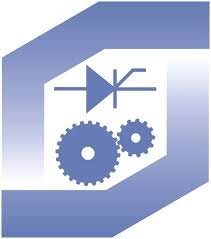

TSD parking
O projektu
Projekt je nastao početkom školske godine 2019./2020. Cilj projekta je potaknuti učenike na rekreaciju tj. dolaženje biciklom u školu, no i za uključivanje u izvannastavne aktivnosti kao što je izrada i poboljšanje parkinga.
Kako je parking napravljen?
Parking je baziran na RFID tehnilogiji, naime na stanici se nalaze RFID čitači na koje se, nakon provlačenja lanca okolo bicikla, prislanja kartica, token ili narukvica. Arduino koji pogoni RFID čitač očitava ID kartice te pomoću mrežnog kabela šalje centralnoj jedinici podatke. Na centralnoj jedinici se vrti python3 skripta koja provjerava ispravnost podataka u bazi (koja je u cloudu) te šalje nazad Arduino upute za zaključavanje stanice.
Tko i kako može postati korisnik parkinga?
Korisnik parkinga može postati svaki učenik srednje škole u Daruvaru. Postupak za registraciju i dodavanje vozila moguć je na našoj web stranici. Također pomoću stranice korinik može imati uvid u zapise u kojima piše s kojim vozilom, kada i gdje se parkirao.
O nama
Ovaj projekt su izradili učenici Tehničke škole Daruvar uz pomoć nastavnika. Puno truda volje i slobodnog vremena je uloženo u projekt, to se može vidjeti prema rezultatima Međunarodne izložbe inovacija ARCA 2019., gdje je parking osvojio zlatnu medalju. Tehnička škola Daruvar utemeljena je 1992. godine.
